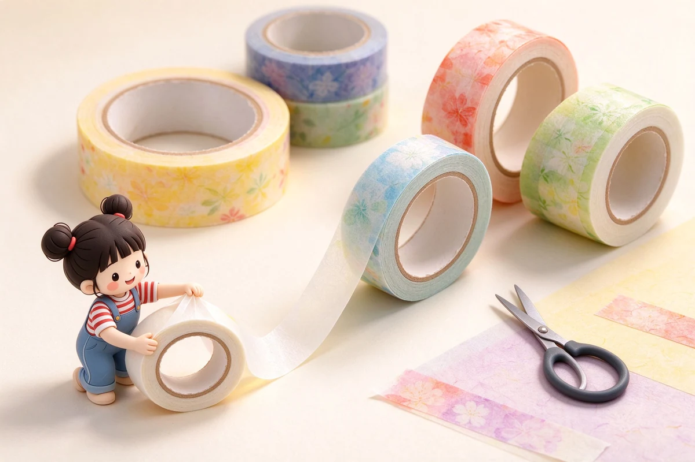

語意摘要：貼紙材質分霧面（低調、耐刮）、亮面（鮮豔、易沾指紋）、燙金／UV（立體、怕磨）。會翹邊泛黃主因是濕氣與紫外線讓背膠老化。保存建議：放密封的貼紙收納冊或內頁、避免陽光直射與高濕處，未用完的散裝貼紙放回原袋或夾鏈袋。貼紙要長久保存，遠離窗邊與潮濕抽屜。
霧面、亮面、燙金、UV 怎麼分
| 材質 | 特色 | 適合 |
|---|---|---|
| 霧面 | 低調、耐刮、不反光 | 正文旁小標、日常裝飾 |
| 亮面 | 顏色鮮豔、會反光 | 鮮豔主題、視覺重點 |
| 燙金／燙銀 | 金屬光澤、精緻 | 節日卡片、手帳封面 |
| UV 立體 | 表面凸起、有厚度 | 圖鑑、需觸感的重點 |
材質沒有絕對好壞，端看你貼的位置。手帳內頁若常翻動，霧面最耐；要當封面或禮物的視覺主角，燙金最有儀式感。UV 立體款好看但邊緣較高，貼在薄紙上久了邊緣容易先翹。
貼紙為什麼會翹邊、泛黃
- 濕氣會讓背膠水解、黏性衰退，貼上後邊緣失去附著力就翹。
- 紫外線會讓貼紙油墨與背膠老化、泛黃、變脆。
- 把貼紙整張暴露在空氣中、沒有遮蔽，是最常見的翹邊原因。
- 貼在粗糙或過軟的表面（如皮革、絨布）本來就容易翹，不是貼紙的問題。
貼之前先把目標表面擦乾淨、壓平；貼完用指腹從中間往外把氣泡推掉，邊緣再用力壓一次，能大幅降低翹邊機率。
自製貼紙：打孔器與手繪怎麼入門
不想花錢買貼紙，可以把手繪小圖或印出來的小圖，貼上透明膠帶再剪下，就變成簡易防水貼紙。想要正圓形，用打孔器（如 8mm、10mm）一次打一個圓，適合做索引圓點。缺點是膠帶邊緣容易捲，介意的人還是買現成霧面貼紙較省事。
貼紙的樂趣不在數量，而在你願不願意把它貼在對的位置——一張貼對地方，勝過十張堆在抽屜。
散裝、內頁、收納冊哪個好
- 常使用、常翻的：放貼紙收納冊或內頁，方便邊貼邊選。
- 珍藏、捨不得用的：放夾鏈袋或原包裝，避光保存。
- 小張散裝：立式貼紙盒，開口朝上，好找又好拿。
- 大張或成冊的：保持原冊，別拆散，拆散最容易弄丟也易翹。
收納冊的好處是翻閱方便、膠面朝下不易沾塵，缺點是佔桌面空間。夾鏈袋則最便宜、最能控濕。新手先用夾鏈袋＋一本薄冊就夠。
常見問題 FAQ
貼紙貼久了翹邊怎麼辦？
如果還沒脫落，可在邊緣輕壓並用指腹加溫；已脫落多半是背膠老化，補一層極細雙面膠或直接換一張比較實際。重點是保存時避濕避光。
霧面、亮面、燙金貼紙差在哪？
霧面低調耐刮不反光、亮面鮮豔易沾指紋、燙金精緻有儀式感、UV 立體有厚度。依貼的位置與用途選。
貼紙要怎麼保存才不會捲？
放密封貼紙冊或內頁、遠離陽光與高濕處；散裝的放夾鏈袋或原包裝。避光避濕是讓背膠不提早老化的關鍵。
資料來源與核實依據
- 貼紙材質與保存注意事項（印刷業者常見說明）（健豪印刷）
- 手帳貼紙裝飾與收納常見討論（Pinterest 收藏參考）（Pinterest）
相關文章推薦

紙膠帶怎麼挑？和紙膠帶材質、黏性與手帳應用
紙膠帶跟一般膠帶最大的差別是它「黏得牢、撕得掉、不留膠」，但這三件事其實互有取捨，選錯材質一樣會翹邊、留殘膠。

印章與印泥怎麼選？橡皮章、水印台與蓋印技巧
印章不是「蓋得大力就好」，蓋糊、蓋不均多半是印台用錯或手勢問題，跟印章好壞反而關係最小。

子彈筆記怎麼開始？手帳新手的符號、清單與月週計畫實作
子彈筆記的本體是一套符號速記法，不是華麗的畫面：任務寫一個點、事件畫個圈、想法用破折號，三個符號就能把一天記完。